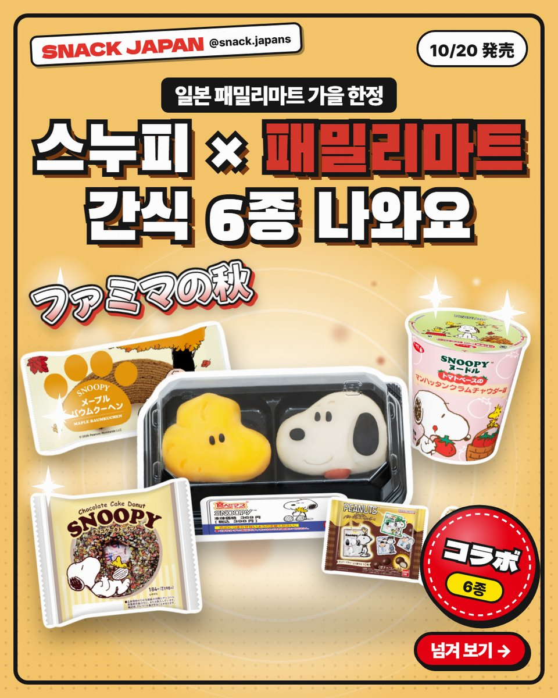
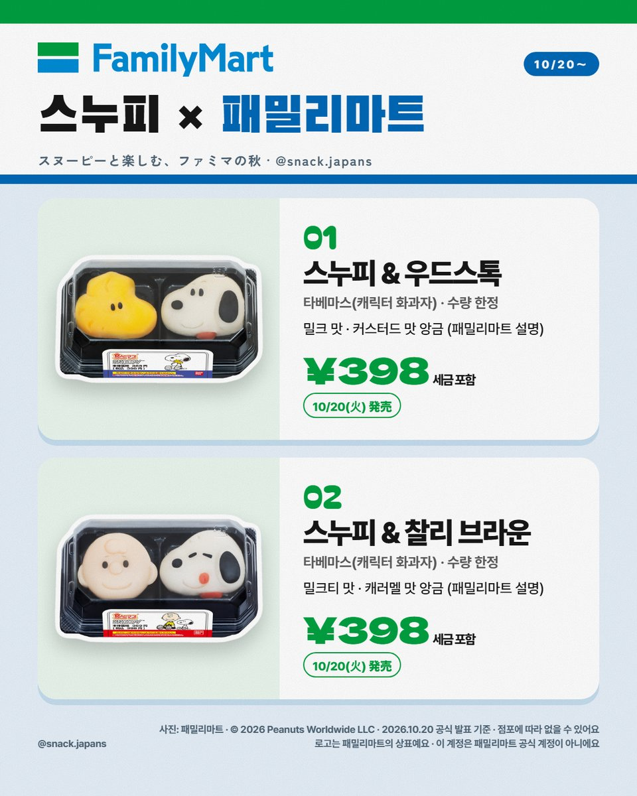
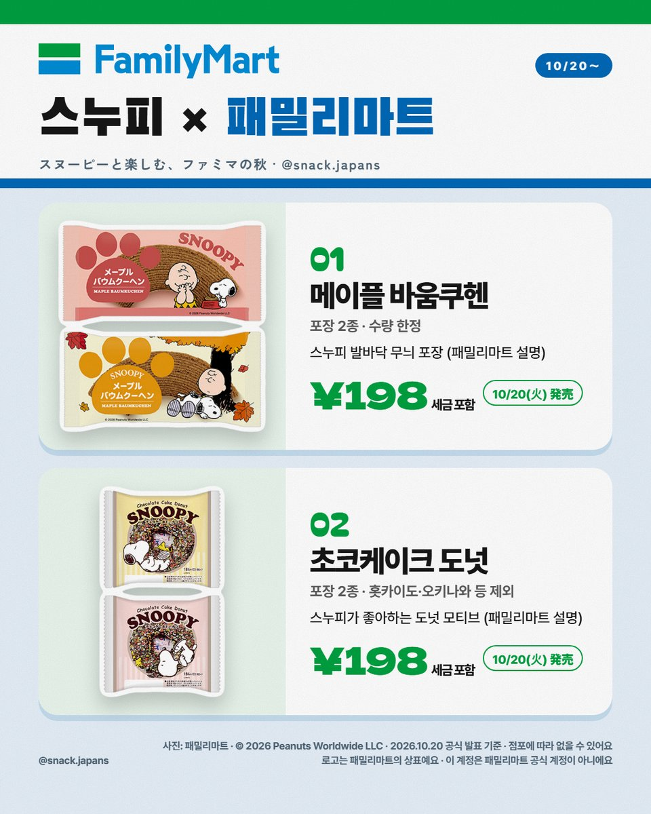
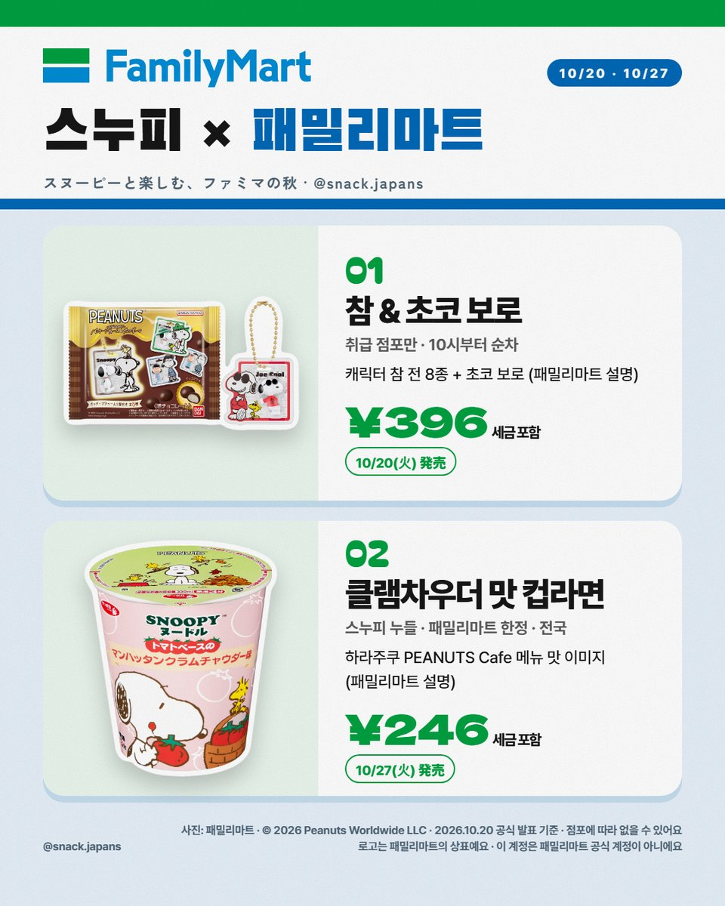
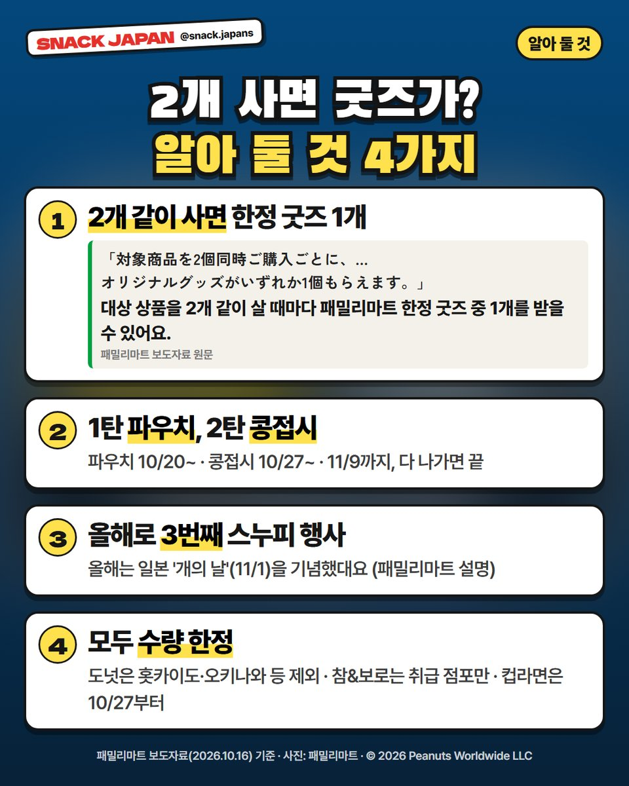
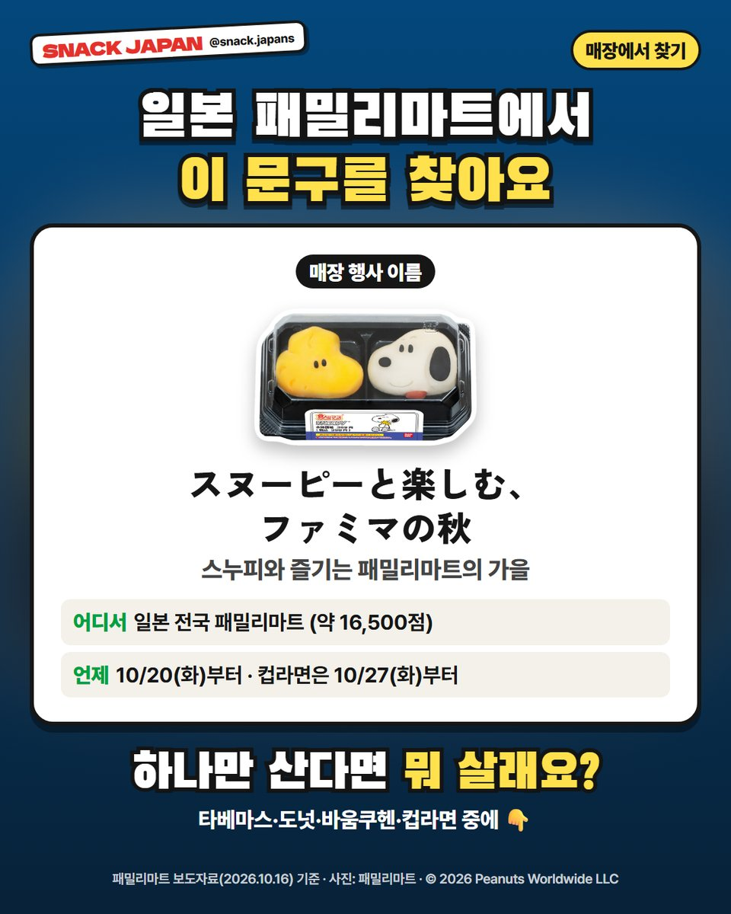

일본 패밀리마트 스누피 콜라보 간식 6종, 2개 사면 한정 굿즈까지
패밀리마트 가을 행사 시작! 스누피 화과자·도넛·바움쿠헨에 10/27부터는 컵라면까지, 2개 같이 사면 한정 굿즈도 받아요.
일본 패밀리마트가 지금
스누피 천지예요 🐶🍂
가을 행사로 스누피 간식이 우르르 나왔어요.
올해로 3번째 스누피 행사래요!
패밀리마트 보도자료 기준으로 정리해 볼게요.

1. 10/20(화)부터 전국 패밀리마트
- 행사 이름: スヌーピーと楽しむ、ファミマの秋 (스누피와 즐기는 패밀리마트의 가을)
- 파는 곳: 일본 전국 패밀리마트 (약 16,500점)
- 시작: 10/20(화)부터, 컵라면은 10/27(화)부터
- 가격: 사진 카드에 정리해 뒀어요

2. 타베마스 2종 (캐릭터 화과자)
캐릭터 얼굴 모양 화과자 '타베마스'가
2종 따로 나와요. 수량 한정이에요.
- 스누피 & 우드스톡: 밀크 맛 · 커스터드 맛 앙금 (패밀리마트 설명)
- 스누피 & 찰리 브라운: 밀크티 맛 · 캐러멜 맛 앙금 (패밀리마트 설명)

3. 메이플 바움쿠헨 · 초코케이크 도넛
둘 다 포장이 2종씩이고 수량 한정이에요.
- 메이플 바움쿠헨: 스누피 발바닥 무늬 포장 (패밀리마트 설명)
- 초코케이크 도넛: 스누피가 좋아하는 도넛이 모티브 (패밀리마트 설명)
- 도넛은 홋카이도·오키나와 등에선 안 팔아요

4. 참 & 초코 보로 · 클램차우더 맛 컵라면
- 참 & 초코 보로: 캐릭터 참(전 8종) + 초코 보로, 취급 점포만, 10시부터 순차 판매
- 스누피 누들 클램차우더 맛: 10/27(화)부터 전국, 패밀리마트 한정
- 컵라면은 하라주쿠 PEANUTS Cafe 메뉴 맛을 이미지했대요 (패밀리마트 설명)

5. 2개 같이 사면 한정 굿즈!
대상 상품을 2개 같이 살 때마다
패밀리마트 한정 굿즈 중 1개를 받을 수 있어요.
- 1탄 파우치: 10/20부터
- 2탄 콩접시: 10/27부터
- 둘 다 11/9까지, 다 나가면 끝
- 올해는 일본 '개의 날'(11/1)을 기념했대요 (패밀리마트 설명)

6. 매장에서 이렇게 찾아요
매장에서 이 행사 이름을 찾아보세요.
- スヌーピーと楽しむ、ファミマの秋
- 전부 수량 한정이고, 점포마다 없을 수 있어요
총평
- 추천: 스누피 좋아하는 분, 일본 편의점에서 귀여운 간식 찾는 분
- 기준: 10월 16일 패밀리마트 공식 발표
- 참고: 굿즈는 다 나가면 끝나요
하나만 산다면 뭐 살래요?
타베마스? 도넛? 컵라면? 😆
사진: 패밀리마트 · © 2026 Peanuts Worldwide LLC
SNACK JAPAN은 패밀리마트 공식 계정이 아니에요.